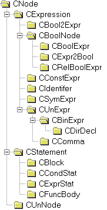

Progetto di compilatore C++
per il corso di Informatica Teorica 1998/99
di Ruffaldi Emanuele
Introduzione
Questo documento descrive l’uso, il funzionamento e la struttura interna di un mini compilatoere C++ scritto per il corso di Informatica Teorica conformemente ai requisiti posti dal docente. Rispetto al progetto iniziale sono state aggiunte alcune componenti abbastanza rilevanti:
Il compilatore è strutturato a pipeline, ogni unità processa l’input dalla precedente e la rinvia alla successiva; suddividiamo inoltre tali unità fra front-end e back-end. La prima parte, il front-end, è specifico del linguaggio da tradurre, mentre la seconda è specifica della macchina, le due parti condividono, infatti, l’albero di traduzione che contiene le informazioni raccolte prima dall’analisi sintattica e poi da quella semantica. In questa implementazione il front-end è quello di un sottoinsieme del linguaggio C++, mentre esistono due back-end, uno per macchine Intel x86 ed uno per macchine Digital Alpha. Il diagramma seguente mostra la struttura a pipeline del compilatore, in cui sono indicati gli elementi della pipeline, i dati in ingresso ed uscita, le classi C++ che implementano tali elementi.
Utilizzo del compilatore
La sintassi della linea di comando e le opzioni di questo compilatore sono molto simili a quelle di tradizionali, in particolare la sintassi è:
cmm [opzioni] filesorgente
dove opzioni indica un – seguito da dei codici che controllano il comportamento del compilatore; la lista delle opzioni è la seguente:
|
Fp |
Stampa l’albero sintattico |
|
Fs |
Stampa l’albero dopo l’analisi semantica |
|
Ft |
Stampa la tabella dei simboli |
|
GA |
Genera codice per il processore Alpha [default se compilato sotto Digital UNIX] |
|
G3 |
Genera codice per il processore 386 [default se compilato su di un PC] |
|
h |
Mostra l’help |
|
P |
Genera solo il file del sorgente preprocessato: filesorgente.i |
|
S |
Genera solo il file assembler senza richiamare l’assemblatore: filesorgente.s o filesorgente.asm |
|
T |
Genera solo il file dei token sotto forma di testo: filesorgente.tkn |
Il compilatore, se richiamato senza le opzioni P, S o T, genera un file assembler .s o .asm e richiama l’assemblatore nel caso in cui questo sia disponibile: in tal caso viene generato un file .o o .obj a seconda della macchina sulla quale gira il compilatore
|
Macchina |
File Assembler |
Assemblatore |
Modulo oggetto |
|
Alpha |
.s |
as |
.o |
|
Intel |
.asm |
masm |
.obj |
Analizzatore lessicale
L’analizzatore sintattico costituisce la prima fase del processo di compilazione ovvero scompone il testo del sorgente in elementi lessicali (token) che consentono di astrarre le operazioni dell’analizzatore sintattico. A sua volta l’analizzatore lessicale, chiamato in seguito lexer, si appoggia al preprocessore che gestisce la lettura dal file sorgente, trasforma i commenti in spazi e fornisce le primitive per una futura gestione di file include. La classe CScan eredita da CPreproc per sfruttandone la funzione di lettura carattere get() e quelle per estrarre informazioni sul numero di linea e di file.
Il lexer puo’ essere utilizzato attraverso le funzioni current() e next() che ritornano, rispettivamente il token corrente ed il successivo, un flusso di token puo’ considerarsi terminato alla ricezione del token tknFINEFILE. I tipi di token ricoprono gran parte degli operatori e separatori del C++ oltre a quelli usati per identificare le singole istruzioni (come tknWHILE o tknIF) , i vari tipi di costanti (tknICONST, tknCCONST e tknFCONST) ed infine tknIDENT. A seconda del tipo di token sono associate delle informazioni memorizzate dentro un oggetto Token che puo’ contenere stringhe , numeri o un carattere.
Alla luce dell’architettura del lexer si puo’ spiegare il funzionamento delle opzioni –P e –T: la prima costruisce un CPreproc ed estrae caratteri fino alla fine del file, controllando eventuali variazioni nei numeri di linea, la seconda, invece, usa un CScan per estrarre tutti i token fino a tknULTIMO e stampa il risultato in un file usando i comandi di stampa dell’oggetto token. Un esempio del funzionamento dell’analizzatore lessicale e’ mostrato da questo semplice programma:
int k = 200;
void f ()
{
char * s = "Hello World";
}
viene espresso a livello di token come:
Analizzatore sintattico
L’analizzatore sintattico riceve il flusso di token proveniente dal lexer e costruisce un albero sintattico sulla base della grammatica ridotta del C++ riportata in Appendice A. Rispetto alle specifiche del progetto la grammatica e’ stata ampliata per il supporto delle espressioni e delle dichiarazioni complete, anche complesse, dei tipi di dato, senza pero’ introdurre le strutture o le classi. Esempi di dichiarazioni complesse sono le seguenti:
int ivar;
int (* funcptr)(int , char );
alle quali corrisponde il seguente albero sintattico:
Nblock
|- Ndeclstat
|\- Ndecl i
| \- Ndirdecl ivar
|- Ndeclstat
\- Ndecl i
\- Ndirdecl funcptr
\- Nptrdecl
\- Nfuncdecl
|- Nargdecl i
|\- Ndirdecl
\- Nargdecl c
\- Ndirdecl
Ecco altri esempi di dichiarazione complessa con gestione degli errori:
int ivar;
float fvar;
char * cptr;
int iarray[100];
int * iarray2[ivar]; // genera un errore: expected constant
int * (*arrayptr)[20];
int (* funcptr)(int , char );
int (arrayfunc[40])(int, char, int * (*)(int)); // genera un errore: array element, cannot be function
int (*arrayfunc2[40])(int, char, int * (*)(int));
alle quali corrisponde il seguente albero sintattico:
Nblock
|- Ndeclstat
|\- Ndecl i
| \- Ndirdecl ivar
|- Ndeclstat
|\- Ndecl f
| \- Ndirdecl fvar
|- Ndeclstat
|\- Ndecl c
| \- Ndirdecl cptr
| \- Nptrdecl
|- Ndeclstat
|\- Ndecl i
| \- Ndirdecl iarray
| \- Narraydecl
| \- Nconst int = 100
|- Ndeclstat
|\- Ndecl i
| \- Ndirdecl iarray2
| \- Narraydecl
| |- Nptrdecl
| \- "ivar"
|- Ndeclstat
|\- Ndecl i
| \- Ndirdecl arrayptr
| \- Nptrdecl
| \- Narraydecl
| |- Nptrdecl
| \- Nconst int = 20
|- Ndeclstat
|\- Ndecl i
| \- Ndirdecl funcptr
| \- Nptrdecl
| \- Nfuncdecl
| |- Nargdecl i
| |\- Ndirdecl
| \- Nargdecl c
| \- Ndirdecl
|- Ndeclstat
|\- Ndecl i
| \- Ndirdecl arrayfunc
| \- Narraydecl
| |- Nfuncdecl
| ||- Nargdecl i
| ||\- Ndirdecl
| ||- Nargdecl c
| ||\- Ndirdecl
| |\- Nargdecl i
| | \- Ndirdecl
| | \- Nptrdecl
| | \- Nfuncdecl
| | \- Nptrdecl
| | \- Nargdecl i
| | \- Ndirdecl
| \- Nconst int = 40
\- Ndeclstat
\- Ndecl i
\- Ndirdecl arrayfunc2
\- Narraydecl
|- Nptrdecl
|\- Nfuncdecl
| |- Nargdecl i
| |\- Ndirdecl
| |- Nargdecl c
| |\- Ndirdecl
| \- Nargdecl i
| \- Ndirdecl
| \- Nptrdecl
| \- Nfuncdecl
| \- Nptrdecl
| \- Nargdecl i
| \- Ndirdecl
\- Nconst int = 40
Il parser ha una struttura discendente ricorsiva in gran parte delle grammatica tranne nel caso degli operatori binari per i quali e’ stata realizzata una tabella che associa al tipo di token un tipo di nodo dell’albero sintattico con una corretta gestione delle priorita’.
L’albero prodotto dal parser viene di norma passato all’analizzatore semantico per essere "decorato", ovvero per estendere le informazioni sintattiche alla luce dell’analisi semantica, in particolare i nodi corrispondenti agli identificatori vengono convertiti in riferimenti a simboli della tabella.
L’opzione di compilazione –Fp consente di estrarre e stampare a video l’albero di traduzione dopo l’analisi sintattica, con un risultato simile a quello riportato nell’esempio precedente: gran parte dei token del programma sorgente sottoforma di elementi terminali, costituiscono una eccezione alcuni separatori che sono richiesti dalla grammatica e che sarebbero ridondanti nell’albero, ad esempio il ; e le parentesi.
Analizzatore semantico
L’analizzatore semantico di questo compilatore esegue diverse operazioni in modo tale da rendere piu’ semplice la stesura del generatore di codice:
Alla fine del processo di analisi semantica l’albero di traduzione risulta pronto per essere passato al generatore di codice, a meno che non siano stati riscontrati errori, in tal caso il compilatore abortisce. Questa fase della compilazione avviene attraverso un’unica visita dell’albero di traduzione ad opera di un istanza della classe Semantic, vengono qui esaminate in breve le varie parti dell’analisi.
Tabella dei simboli
La tabella dei simboli di questo compilatore, non esiste come entita’ unica e distinta; e’ bensi’ costituita da un albero di tabelle di simboli ognuna legata al blocco di istruzione in cui i simboli sono stati dichiarati. Questa struttura della tabella dei simboli e’ stata resa necessaria dal supporto per i blocchi locali alle funzioni e la dichiarazione di variabili al loro interno; i blocchi, memorizzati come nodi NBlock, sono collegati al padre e contengono una lista di tutti i blocchi figli, quando occorre un simbolo si parte dal blocco corrente e si risale di livello fino ad arrivare al blocco radice, quello delle variabili a visibilita’ locale che rappresenta l’unita’ di traduzione del programma.
I simboli sono divisi in due grandi categorie le variabili e le funzioni a causa delle grandi diversita’ esistenti fra questi due tipi di dati. Le due tipologie possiedono degli attributi in comune ed alcuni specifici delle funzioni:
Questi sono invece gli attributi aggiuntivi propri di un simbolo Function:
Semplificazione delle espressioni costanti
L’analisi semantica riconosce operazioni su operandi di tipo costante e li semplifica al loro valore numerico; tale funzionalita’ e’ stata richiesta dalla grammatica per gestire la dimensione degli array nelle dichiarazioni come una costante. Il compilatore effettua anche trasformazioni di tipo prima di applicare l’operazione.
Type checking
I tipi del linguaggio C++ sono stati rappresentati attraversio una classe CType che memorizza tutte le informazioni inerenti ad un tipo, consentendo anche tipi complessi e prototipi di funzione grazie ad una struttura a lista. Per ridurre il consumo di memoria gli oggetti della classe CType vengono memorizzati in una cache e costruiti solo dal gestore della cache, questo introduce anche il comodo vantaggio di poter fare un confronto fra tipi sulla base del semplice puntatore al CType. Da un punto di vista di design pattern un PType puo' essere considerato un handle di un CType, ad handle uguali corrispondono oggetti CType uguali. L’effettivo controllo di tipo viene compiuto dalla classe TypeCheck attraverso funzioni membro quali assignable(…), binary(…) , convert(…):effettuano gli opportuni controlli, generano eccezioni nel caso di operazioni non valide e modificano l’albero di traduzione per convertire gli operandi, attraverso il nodo Ncast.
Un esempio di come venga rappresentato un tipo complesso e’ quello di un puntatore a funzione:
void (*)(int * , int);
I tipi in cui sono divisi gli oggetti CType possono essere terminali, ovvero non richiedono sottotipi, oppure non terminali, e vengono specificati dall’enumerato BaseType:
Una estensione del compilatore alle strutture dati e ad i templates richiederebbe l’introduzione di nuovi elementi nella classe CType: tSCOPE per specificare lo scope di un tipo, tSTRUCT per indicare il puntatore al simbolo della struttura, tTEMPLATE per indicare la presenza di un parametro template con un certo nome.
In fase di stampa dell’albero di traduzione i tipi delle variabili vengono rappresentati attraverso una codifica stringa molto simile a quella usata per il name mangling nei compilatori commerciali: ai tipi fondamentali sono associate dei caratteri i (int), c (char) , f (float) , v(void), mentre ai tipi complessi sono associate
Espressioni booleane
La generazione del codice di espressioni booleane richiede l’introduzione di informazioni addizionali, in particolare definiamo descrittore logico la quadrupla < condizione, true labels, false labels, unisci labels >.
Questo attributo, proprio delle espressioni che generano o usano i booleani, consente di semplificare la logica di gestione delle etichette in questo tipo di espressioni.
La condizione appartiene ad un enumerato ( nil, true, false, lt, gt, le, ge, eq, ne), ed indica quale e’ il confronto richiesto da una certa espressione, questo formato consente di semplificare la gestione del not logico poiche’ e’ sufficiente invertire il confronto.
I campi true labels, false labels, unisci labels sono dei set di label che rappresentano rispettivamente, il punto al quale saltare per un risultato vero, un risultato falso, ed in caso di uscita comune, quest’ultima sfruttata dall’if.
Le operazioni e le istruzioni interessate a questo attributo sono and logico, or logico, not logico, operatori di confronto, if else, while, for, do...while. Esaminiamo in particolare il caso dell’ or e dell’ and, ricordando che in base all’algebra booleana l’espressione (a and b) = not (not a or not b). Per semplificare ancora la gestione di questi operatori, dobbiamo spezzare un operatore come l’or (cortocircuitato) in due sotto operatori, uno unario ed uno binario, ovvero:
(a or b) è (or1 a) or2 b
(a and b) è not ( (or1 not(a) ) or2 not(b))
or1 a la variabile a e’ una espressione di tipo booleano, ovvero memorizza un descrittore logico, se non e’ gia’ un espressione booleana dovra’ essere convertita tramite un confronto con il valore costante 0. Nel caso a.cond = falso occorre sempre valutare la seconda parte dell’espressione, quindi generiamo:
< nil, a.vero, *, *>.
Se invece a e’ una normale espressione, generiamo una nuova label L:
jcond a.cond, L
label a.falso
< nil, a.vero U (L), * , * >
c or2 b questo operando in realta’ non genera alcuna istruzione ma lavora solo a livello di descrittori,
se b.cond = falso allora ritorna
< nil, c.vero U b.vero, b.falso, *> altrimenti otteniamo < b.cond, b.vero U c.vero, b.falso, *>Due esempi, uno semplice ed uno piu’ complesso, possono illustrare meglio queste operazioni:
w = !(k > 2);
Le istruzioni condizionale vengono generate sfruttando queste informazioni, questi che seguono sono le specifiche della generazione del codice:
if (expr) body else body2opt
Analisi: trasforma expr in boolean e fa in modo tale rendere non vuota la false; se e’ presente l’else aggiunge una label anche ad unisci
genera expr
jcond (not desc.cond), desc.falso
label desc.vero
genera body
se e’ presente un else
jump desc.unisci
label desc.falso
genera body2
altrimenti
label desc.falso
label desc.unisci
while (expr) body
Analisi: trasforma expr in boolean, fa in modo tale che gli insiemi di label unisci, false e vero non siano nulli
label desc.unisci
genera expr
jcond (not desc.cond, desc.falso)
genera body
jump desc.unisci
label desc.falso
do body (expr)
Analisi: dal punto di vista dell’analisi semantica non vi sono differenze con Nwhile
label. desc.unisci
genera body
genera cond
jcond (desc.cond, desc.vero)
label c.falso
Analisi delle espressioni
L’analizzatore semantico e’ specificato da una lista di proposizioni strutturate su tre campi:
Nella specifica seguente bisogna interpretare expr0 come il nodo di tipo espressione che costituisce l’operazione, expr1 e’ il primo operando ed expr2 e’ il secondo ove presente.
& expr1 è expr0
Condizione: expr1.lvalue = true
Azione controllo: expr0.tipo = ptr(expr1.tipo); expr0.lvalue = false
Azione traduzione: non richiede traduzione poiche’ tutte le variabili vengono inserite nello stack come lvalue
* expr1 è expr0
Condizione: expr1.tipo = ptr
Azione controllo: expr0.tipo = deref (expr1); expr0.lvalue = true
Azione traduzione: rvalue(expr1)
expr1 = expr2 è expr0
Condizione: expr1.lvalue = true; expr2.tipo assignable a expr1.tipo; expr1.tipo non costante
Azione controllo: expr0.lvalue = false; expr0.tipo = expr1.tipo
Azione traduzione: trad of expr2; rvalue(expr2); trad of expr1; store<tipo>
expr1 [ expr2 ] è expr0
Condizione: expr1.tipo = ptr o array; expr2.tipo =integral; expr1.lvalue = true
vale anche l’inverso poiche’ in C++ scrivere a[i] <> a+i <> i + a <> i[a]
Azione controllo: expr0.tipo = deref(expr1 o 2); expr0.lvalue = true
Azione traduzione: trad of expr1; trad of expr2; rvalue(expr2); converti expr2 ad intero;
genera una costante pari a sizeof(deref(expr1)); muli; addp
expr1 + expr2 è expr0
Condizione: possono valere le combinazioni di tipi (real, real), (integral, integral), (integral, real), (real, integra) oltre a due combinazioni speciali (ptr, int) e (int, ptr).
Azione controllo: expr0.lvalue = false
(ptr, int) expr0.tipo = expr1.tipo
(int, ptr) expr0.tipo = expr2.tipo
(integral, integral) expr0.tipo = bestof(expr1.tipo, expr2.tipo)
(real, real) expr0.tipo = bestof(expr1.tipo, expr2.tipo)
(real, integral) expr0.tipo = expr1.tipo
(integral, real) expr0.tipo = expr2.tipo
Azione traduzione:
(ptr, int) trad of expr1; rvalue(expr1); trad of expr2; rvalue(expr2); cvi
const sizeof(deref(expr1)); muli; addp
(int, ptr) basta scambiare expr1 con expr2 nella precedente azione
(others) traduciamo il primo e poi il secondo, convertendoli al tipo giusto ed
infine generando una add<maxtipo>
expr1 - expr2 è expr0
Pressoche’ identica alla somma eccetto per i puntatori, in questo caso infatti valgono:
Condizione: (ptr, int), (ptr, ptr), nel caso (ptr,ptr) deve valere deref(expr1) == deref(expr2)
Azione controllo: expr0.lvalue = false
(ptr, int) expr0.tipo = expr1.tipo
(ptr, ptr) expr0.tipo = int
Azione traduzione:
(ptr, int) trad of expr1; rvalue(expr1); trad of expr2; rvalue(expr2); cvi
const sizeof(deref(expr1)); muli; subp
(ptr, ptr ) trad of expr1; rvalue(expr1); trad of expr2; rvalue(expr2); subp
expr1 * / % expr2 è expr0
Condizione: expr1.tipo e expr2.tipo scalare
Azione controllo:expr0.tipo = bestof(expr1.tipo, expr2.tipo), expr0.lvalue = false
Azione traduzione: trad of expr1; rvalue(expr1); trad of expr2; rvalue(expr2); operazione
expr1 | & ^ expr2 è expr0
Condizione: expr1, expr2 devono essre integral
Azione di controllo: expr0.lvalue = false, expr0.tipo = bestof(expr1.tipo, expr2.tipo)
Azione di traduzione: trad of expr1; rvalue(expr1); trad of expr2; rvalue(expr2); operazione
expr1 == != < > >= <= expr2 è expr0
Condizione: e’ ammissibile ogni confronto (integral | float, integral | float), se inoltre se entrambi sono puntatori e’ ammissibile se deref(expr1.tipo) == deref(expr2).tipo. [se ci fossero le classi varrebbe l’eriditarieta’ e se ci fosse l’overloading occorrerebbe controllare possibili operatori].
Azione di controllo: expr0.lvalue = false; expr0.tipo = booleano; expr0.logic = < cond, *, *, *>
Azione di traduzione: trad of expr1; rvalue(expr1); converti expr1; trad of expr2; rvalue(expr2);
converti expr2; genera il confronto CMP.
expr1 >> << expr2 è expr0
Condizione: expr1.tipo = integral; expr2.tipo = integral
Azione di controllo: expr0.lvalue = false; expr0.tipo = expr1.tipo
Azione di traduzione: trad of expr1; rvalue(expr1); trad of expr2; rvalue(expr2);
converti expr2; genera lo shift
expr ( expr1, expr2 ... expr n) è expr0
Condizione: expr.tipo = funzione o expr.tipo = ptr funzione;
expr non costante;
deve valere anche il controllo dei tipi dei parametri in rapporto uno ad uno;
Azione di controllo: expr0.lvalue = false; expr0.tipo = tipo ritornato dal prototipo di funzione scelto
Azione di traduzione: generiamo il codice di ognuno dei parametri, reso lvalue (a meno che l’argomento formale non sia reference o un array), convertito al tipo adeguato, e seguito da arg<tipo>. Per expr puntatore generiamo il codice, ne prendiamo l’rvalue e generiamo callp; se invece e’ una funzione visibile facciamo call symbolo.
binnot expr1 è expr0
Condizione: expr1 sia integral
Azione di controllo: expr0.lvalue = false; expr0.tipo = expr1.tipo
Azione di traduzione: trad of expr1; rvalue(expr1); not<tipo>
+ expr1 è expr0
Condizione: expr1 sia scalare
Azione di controllo: expr0 = expr1
Azione di traduzione: nessuna
- expr1 è expr0
Condizione: expr1 sia scalare
Azione di controllo: expr0.lvalue = false; expr0.tipo = expr1;
Azione di traduzione: trad of expr1; rvalue(expr1); neg<tipo>
cast expr1 type è expr0
Condizione: expr1 assegnabile al tipo del cast
Azione di controllo: expr0.tipo = tipo del cast; expr0.lvalue = false
Azione di traduzione: trad of expr1; rvalue(expr1); cast del valore
comma expr1…exprN è expr0
Azione di controllo: expr0.tipo = tipo ultima espressione; expr0.lvalue = false
Azione di traduzione: traduce ogni espressione gettandone via il valore, tranne per l’ultima
Generatore di codice
Il generatore di codice di questo compilatore e’ costituito da una visita dell’albero di traduzione associata alla generazione di linguaggio assembler nel file di output; in entrambe le versioni, quella per Intel x86 e quella per Digital Alpha, la generazione e’ suddivisa in due fasi, una di preparazione ed una di generazione effettiva. La prima fase analizza la tabella dei simboli e genera le dichiarazioni forward, mentre la seconda genera il codice utilizzando la cpu come una macchina a stack. Questo tipo di generazione non e’ molto efficiente ma consente di semplificare molto la codifica: l’uso dei registri del processore avrebbe richiesto un algoritmo di selezione dei registri.
Questo e’ un esempio di generazione del codice su un breve programma:
int proc(int k, char c, int * p)
{
k = 10 + c;
*p = k;
return k * 20;
}
esto punto viene inserito il corpo della funzione:
.386P
if @Version gt 510
.model FLAT
else
_TEXT SEGMENT PARA USE32 PUBLIC 'CODE'
_TEXT ENDS
_DATA SEGMENT DWORD USE32 PUBLIC 'DATA'
_DATA ENDS
CONST SEGMENT DWORD USE32 PUBLIC 'CONST'
CONST ENDS
_BSS SEGMENT DWORD USE32 PUBLIC 'BSS'
_BSS ENDS
_TLS SEGMENT DWORD USE32 PUBLIC 'TLS'
_TLS ENDS
FLAT GROUP _DATA, CONST, _BSS
ASSUME CS: FLAT, DS: FLAT, SS: FLAT
endif
PUBLIC _proc ;proc
_TEXT SEGMENT
_k$ = 8
_p$ = 12
_c$ = 16
A questo punto viene inserito il corpo della funzione :
|
_proc PROC NEAR |
|
|
push ebp |
|
|
mov ebp, esp |
|
|
push 10 |
|
|
lea eax, BYTE PTR _c$[ebp] |
; inserimento di una costante literal |
|
push eax |
|
|
pop eax |
|
|
movsx eax, al |
; trasformazione da char ad integer |
|
push eax |
|
|
pop eax |
|
|
add DWORD PTR [esp], eax |
|
|
mov eax, DWORD PTR [esp] |
|
|
mov DWORD PTR _k$[ebp], eax |
; k = 10 + c |
|
pop eax |
|
|
push DWORD PTR _k$[ebp] |
|
|
mov eax, DWORD PTR [esp] |
; estrazione dell’indirizzo di k |
|
pop ebx |
|
|
mov DWORD PTR [ebx], eax |
; *p = k |
|
pop eax |
|
|
push DWORD PTR _k$[ebp] |
|
|
push 20 |
|
|
pop eax |
|
|
imul eax, dword ptr [esp] |
|
|
mov dword ptr [esp], eax |
|
|
pop eax |
; return k * 20; |
|
jmp $uscita |
|
|
$uscita: |
|
|
pop ebp |
|
|
ret |
|
|
_proc ENDP |
Dopo possono seguire
le altre funzioni definite in questa unita’ di traduzione, in ogni caso il listato e’ terminato con:_TEXT ENDS
END
Struttura dell’albero di traduzione
La struttura di albero sintattico, richiesta dalle specifiche del progetto, è stata estesa per introdurre facilmente la fase di analisi semantica e allo stesso tempo per semplificare le operazioni svolte dal generatore di codice. L’idea che sta alla base di questa struttura ad albero e’ quella di attributo: ogni nodo possiede uno o più attributi calcolati dalle varie fasi della compilazione, in particolare dall’analisi semantica. L’analisi sintattica, infatti, non fa altro che costruire lo scheletro del programma che si deve tradurre senza poter aggiungere niente sulla semantica, non si conoscono, infatti, i tipi delle variabili né quelli delle espressioni. Solo in una fase successiva si può tenere conto degli attributi e valutare i tipi delle espressioni.
L’albero è costituito di nodi appartenenti ad una gerarchia di classi C++ in modo tale da associare la memorizzazione degli attributi a delle categorie semantiche, in pratica non ha senso associare un attributo Tipo ad un nodo che memorizza una istruzione IF. Tale gerarchia di classi ha la classe CNode come radice, che fornisce le primitive di visita dell’albero.
Il diagramma a fianco descrive le relazioni di ereditarietà che coinvolgono le classi dell’albero di traduzione, ogni classe introduce una diversa categoria semantica. L’uso di tipi C++ per distinguere categorie semantiche pare che introduca una eccessiva complessità, in realtà consente di semplificare notevolmente il codice in molte fasi.
Le istruzioni del linguaggio C++ vengono rappresentate da classi discendenti della classe CStatement che ha come informazione principale la posizione all’interno dei file sorgenti, al momento il solo numero di linea. Fra le classi specializzate e’ importante citare la CBlock che rappresenta una generica istruzione composta e memorizza la parte di tabella dei simboli dichiarata al suo interno: una eventuale estensione del compilatore alle strutture dati o alle classi farebbe ancora uso di questa classe per descrivere le dichiarazioni ed i simboli di una struttura. Quella che segue e’ la tabella delle classi specializzate che coprono le principali istruzioni del C++.
|
CBlock |
Rappresenta l’istruzione composita e memorizza i simboli associati a questa istruzione |
|||
|
parent |
puntatore al blocco padre |
|||
|
children |
lista delle istruzioni contenute in un blocco |
|||
|
blocks |
lista dei blocchi figli |
|||
|
id |
identificatore univoco del blocco, viene usato per identificare l’area di memoria delle variabili statiche di un blocco |
|||
|
table |
tabella dei simboli locali al blocco |
|||
|
frameSize |
dimensione dello stack per le variabili locali, calcolata dal generatore |
|||
|
nestingLevel |
livello di nidificazione di un blocco, usato per il debugging |
|||
|
CCondStat |
Istruzioni condizionali del C++: if, while, do..while, for |
|||
|
cond |
espressione della condizione da valutare |
|||
|
incr |
espressione usata nell’incremento (solo for) |
|||
|
block |
istruzione del corpo principale |
|||
|
blockII |
istruzione secondaria: body dell’else oppure istruzione di inizializzazione nel for |
|||
|
bcond |
espressione della condizione sotto forma di booleana (calcolata dall’a. semantico) |
|||
|
CExprStat |
Una istruzione alla quale e’ associata una espressione (ad esempio return) |
|||
|
expr |
l’espressione |
|||
|
CFuncBody |
L’intestazione di una funzione e le istruzioni che la definiscono |
|||
|
function |
il simbolo associato alla definizione di funzione |
|||
|
decl |
l’espressione che costituisce la dichiarazione |
|||
|
block |
corpo della funzione, anche la tabella dei simboli della funzione e’ memorizzata dentro questo blocco. |
|||
L’altra importante categoria di nodi e’ costituita dalle espressioni, per espressione viene inteso un elemento di un programma C++ caratterizzato da un tipo (puntatore ad un oggetto CType) e da un eventuale attributo lvalue: una specifica piu’ corretta avrebbe dovuto introdurre una classe CTypedNode e da essa derivare la classe CExpression, ma questo avrebbe accresciuto ancora di piu’ la struttura delle classi. Tra le espressioni distinguiamo fra le dichiarazioni e gli operatori.
|
CConstExpr |
Valore costante presente nel codice o calcolato dall’analisi semantica |
||||
|
* |
il valore costante viene memorizzato in ival, cval e fval |
||||
|
CIdentifer |
Identificatore, questa e’ una categoria sintattica calcolata dall’analizzatore sintattico; nella fase semantica viene trasformato in un CSymExpr, associato ad un simbolo |
||||
|
ident |
l’identificatore associato all’oggetto |
||||
|
CSymExpr |
Espressione associata ad un simbolo, e’ caratterizzata da un simbolo e da tutti gli attributi di una espressione, in particolare lvalue e tipo. Una variabile viene considerata come lvalue se e’ tale e’ l’attributo di questo oggetto. |
||||
|
symbol |
oggetto CSsymbol associato |
||||
|
CUnExpr |
Espressione o dichiaratore che richiede un nodo come figlio |
||||
|
first |
nodo figlio |
||||
|
CBinExpr |
Espressione o dichiaratore che richiede due nodi figli |
||||
|
second |
secondo nodo figlio |
||||
|
CDirDecl |
Dichiaratore diretto, il figlio sinistro specifica i dichiaratori, mentre il destro l’espressione di inizializzazione. |
||||
|
ident |
identificatore (opzionale) associato alla dichiarazione del simbolo |
||||
|
lineno |
numero di linea della dichiarazione |
||||
|
CComma |
Contiene piu’ sottofigli, questa e’ una eccezione alla struttura di albero binario, poiche’ un CComma puo’ possedere un "grappolo" di figli. Viene utilizzato nelle dichiarazione di piu’ variabili con la stessa statement, nelle chiamate a funzione, nell’operatore comma e per la dichiarazione degli argomenti di una funzione. E’ stata preferita questa struttura a quella di un albero binario vero e proprio per rendere piu’ snello il codice. |
||||
|
children |
lista di nodi figli |
||||
Esiste poi un’altra gerarchia di classi discendenti di CExpression usate per la gestione delle espressioni booleane, queste classi permettono di gestire i salti condizionali senza fare uso di variabili temporanee di tipo bool, consentono inoltre di ridurre i salti nell’esecuzione della short-circuit evaluation.
|
CBool2Expr |
Permette di passare da una espressione di tipo booleano ad una di tipo aritmetico, a livello di generazione del codice consiste nel trasformare lo stato di opportuni registri condizionali della macchina in un valore intero |
|
|
expr |
espressione associata |
|
|
CBoolNode |
Generico nodo booleano, definisce gli attributi comuni a tutte le espressioni booleane rappresentate dal descrittore logico. |
|
|
ldesc |
descrittore logico del nodo booleano |
|
|
CBoolExpr |
Una espressione booleana unaria o binaria |
|
|
sx,dx |
espressioni booleane destra e sinistra di questo operando |
|
|
CExpr2Bool |
Converte una espressione aritmetica in una espressione booleana, effettua l’operazione inversa di CBool2Expr |
|
|
expr |
nodo figlio di tipo espressione |
|
|
CRelBoolExpr |
Espressione relazionale, ovvero una espressione che pone una relazione fra i sue due figli |
|
|
sx, dx |
espressioni aritmetiche destra e sinistra |
|
Nodi dell’albero
Quello che segue e’ l’elenco dei nodi definiti dal compilatore con la propria descrizione e la classe che memorizza le informazioni sul nodo. Gli esempi dei nodi prodotti dal codice C++ sono riportati di seguito
|
Ndeclstat |
CExprStat |
Istruzione di dichiarazione di un simbolo, il figlio e’ collegato ad una espressione dichiarativa |
|
Nargdecl |
CBinExpr |
Dichiarazione di argomento di funzione, il figlio sinistro e’ costituito dai dichiaratori (tipo di base e specificatori), il figlio destro, invece, dalla dichiarazione diretta Ndirdecl ovvero da specifice puntatore, array e dall’identificatore |
|
Ndecl |
CComma |
Dichiarazione, il figlio sinistro contiene la dichiarazione base, mentre la lista specifica i vari Ndirdecl con identificatori e dichiaratori diretti. |
|
Ndirdecl |
CDirDecl |
Dichiarazione diretta, memorizza l’identificatore della dichiarazione (ident), i dichiaratori diretti (figlio sinistro), e l’espressione di inizializzazione (figlio destro) |
|
Nptrdecl |
CUnExpr |
E’ un dichiaratore diretto "puntatore", il figlio indica il tipo al quale punta |
|
Narraydecl |
CBinExpr |
E’ un dichiaratore diretto "array", il figlio sinistro indica la dimensione, in genere un nodo Nconst di classe CConstExpr, il destro, invece, indica il tipo degli elementi |
|
Nfuncdecl |
CComma |
Dichiaratore diretto di funzione, contiene la lista delle dichiarazioni Nargdecl degli argomenti della funzione e i dichiaratori del tipo di ritorno |
|
Nadd, Nsub, Nmul, Ndiv, Nmod, Nbinxor, Nbinor, Nbinand, Nshl, Nshr, Nassign |
CBinExpr |
Espressione aritmetica binaria, i figli sono gli operandi |
|
Nlogand |
CBinExpr |
E’ un nodo temporaneo che rappresenta l’operatore &&, viene costruito durante l’analisi sintattica e trasformato in un nodo booleano CBoolExpr durante la fase semantica |
|
Neq, Nneq, Nlt, Ngt, Nlteq, Ngteq |
CBinExpr |
E’ un nodo temporaneo che rappresenta gli operatori relazionali, viene costruito durante l’analisi sintattica e trasformato in un nodo booleano CRelBoolExpr durante la fase semantica |
|
Ncomma |
CComma |
Operatore comma |
|
Ncall |
CComma |
Chiamata a funzione, contiene la lista dei nodi dei parametri attuali |
|
Ncast |
CBinExpr |
Gestisce il typecasting, il figlio sinistro e’ la dichiarazione del tipo destinazione, mentre il figlio destro e’ l’espressione da convertire |
|
Nlognot |
CUnExpr |
Nodo temporaneo dell’operatore di not logico, questo nodo viene eliminato nella fase di analisi semantica, poiche’ va ad agire semplicemente sul descrittore logico dell’espressione booleana |
|
Nbinnot, Nneg, Nptr, Naddr |
CUnExpr |
Operatore aritmetico unario |
|
Nconst |
CConstExpr |
Espressione costante |
|
Nident |
CIdentifier |
Identificatore C++, viene convertito dall’analisi semantica in un nodo CSymExpr |
|
Narray |
CBinExpr |
Operatore binario [], il figlio sinistro e’ l’indice, il destro l’oggetto array |
|
Nexpr |
CExprStat |
Istruzione espressione |
|
Nfuncbody |
CFuncBody |
Corpo di una funzione, il figlio sinistro e’ la dichiarazione della funzione, il destro il blocco CBlock principale |
|
Nblock |
CBlock |
Istruzione composita |
|
Nreturn |
CExprStat |
Istruzione di ritorno da funzione |
|
Nwhile, Nfor, Nif, Ndo |
CCondStat |
Istruzione condizionale |
|
Nsymbol |
CSymExpr |
Simbolo |
|
Norelse1 |
CBoolExpr |
Espressione booleana unaria generata dall’analisi semantica dividento in due parti un operatore di or logico |
|
Norelse2 |
CBoolExpr |
Espressione booleana binaria ottenuta dalla trasformazione di Nlogor |
|
Nexpr2bool |
CExpr2Bool |
Conversione di una espressione aritmetica in una booleana, viene inserito durante l’analisi semantica |
|
Nbool2expr |
CBool2Expr |
Conversione di una espressione booleana in una aritmetica, viene inserito durante l’analisi semantica |
|
Ncmp |
CRelBoolExpr |
Espressione booleana relazionale |
|
Nboolconst |
CBoolNode |
Espressione booleana costante, viene inserita dall’analisi semantica quando viene convertita una espressione aritmetica costante in una espressione booleana |
Appendice A
La grammatica usata per questo compilatore e’ un adattamento di quella del C++, con alcune variazioni per aumentare la leggibilità, in paricolare scriver nonterminale-clist vuol dire che sono richiesti uno o piu’ nonterminali separati da virgola, mentre una nonterminale-list richiede una sequenza di uno o piu’ nonterminali separati da spazi.
|
Grammatica delle dichiarazioni |
Albero sintattico generato |
|
Declaration: decl-spec dirdecl-clist |
à Ndecl(decl-spec, lista di dirdecl) di classe CComma |
Dirdecl: declarator [ = expression ] |
à Ndirdecl(declarator, initexpression) di classe CdirDecl |
|
(le init expression del C++ non sono ancora considerate ) |
|
Declarator: * declarator declarator [ expression ] declarator ( functionarg-clist ) ( declarator ) identifer e |
|
|
à Nptrdecl(declarator) di classe CUnExpr |
|
|
à Narraydecl(declarator, expression) di classe CbinExpr |
|
|
à Nfuncdecl(declarator, lista di functionarg) di classe Ccomma |
|
|
à Nident di classe Cidentifer |
|
Functionarg: decl-spec dirdecl … |
|
|
à Nargdecl (decl-spec, dirdecl) di classe CbinExpr |
|
|
à Nellipse |
|
Decl-spec: primitive-type [ static | extern ] |
|
|
à Nstatic / Nextern di classe CUnNode |
Nella definizione di declarator e’ stato inserito il simbolo vuoto per unificare quelle che in C++ sono le declarations e le abstract declarations: una abstract declaration e’ una dichiarazione priva di nome, come un argomento di funzione nel prototipo. Non sono ammessi un array senza dimensione.
|
Grammatica dell espressioni |
Albero sintattico generato |
|
expression: |
|
|
binary-expression |
|
|
comma-expression: expression-clist |
à Ncomma (lista di expression ) di classe CComma |
|
binary-expression: Gli operatori binari del C++ con la precedenza e l'associativita' del C++. |
à nodeType ( expression, expression) di classe CBinExpr I nodi sono: Nassign, Nshl, Nshr, Nlt, Ngt, Ngteq, Nlteq, Nlogor, Nlogand, Nbinor, Nbinxor, Nbinand, Neq, Nneq, Nadd, Nsub, Nmul, Ndiv, Nmod |
|
primary: |
|
|
element [ expression ] |
à Narray ( element, expression ) di classe CBinExpr |
|
element ( comma-expression ) |
à Ncall (element, comma-expression) di classe CBinExpr |
|
element: |
|
|
ident |
à Nident di classe CIdentifer |
|
const |
à Nconst di classe CConstExpr |
|
* primary |
à Nptr(primary) di classe CUnExpr |
|
! primary |
à Nlognot(primary) di classe CUnExpr |
|
tilde primary |
à Nbinnot(primary) di classe CUnExpr |
|
- primary |
à Nneg(primary) di classe CUnExpr |
|
+ primary |
primary |
|
( declaration ) primary |
à Ncast (declaration, primary) di classe CBinExpr |
|
( comma-expression ) |
comma-expression |
|
Grammatica delle istruzioni statement: while(expression) statement if ( expression ) statement [else statement ] do statement while( expression ) ; expression ; declaration ; return expression ; ; { statatement-list } |
Albero sintattico generato |
|
à Nwhile(expression, statement) di classe CcondStat |
|
|
à Nif(expression, statement, statement) di classe CcondStat |
|
|
à Ndo(expression, statement) di classe CCondStat |
|
|
à Nexpr ( expression) di classe CExprStat |
|
|
à Ndeclstat (declaration ) di classe CExprStat |
|
|
à Nreturn (expression) di classe CExprStat |
|
|
à Nblock ( lista di statement) di classe CBlock |
|
Grammatica dell’unita’ di traduzione |
Albero sintattico |
|
Translation-unit: |
à Nblock (lista di istruzioni) di classe CBlock |
|
translation-unit-item-list |
|
|
Translation-unit-item: |
|
|
declaration block-statement |
à Nfuncbody (declaration, statement ) di classe CFuncBody ( la declaration deve essere una sola dichiarazione di un prototipo di funzione con identificatore) |
|
declaration ; |
à Ndeclstat(declaration) di classe CExprStat |
Appendice B – sorgenti
I sorgenti di questo progetto possono essere cosi’ raggruppati: